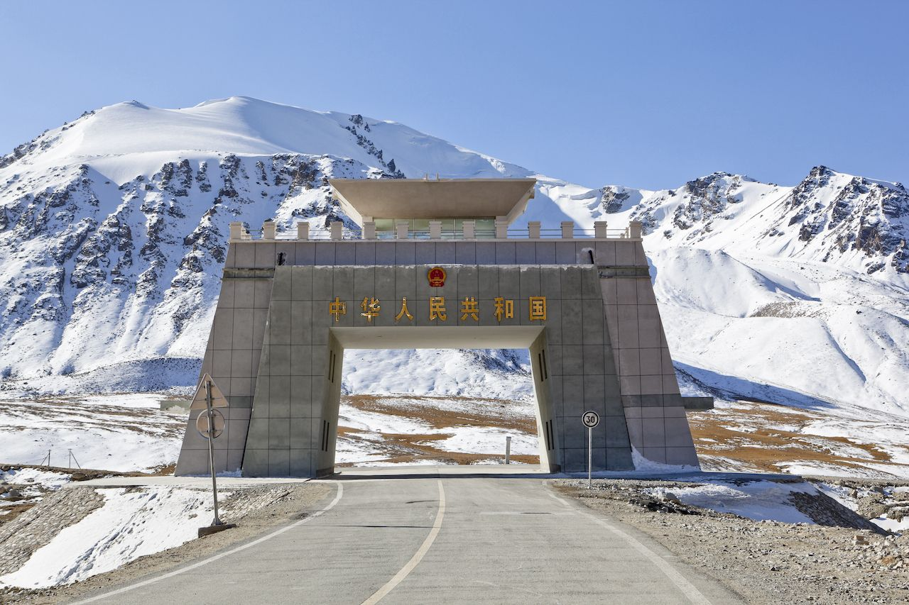

Provinces & Territories Mountain Pass Atlases
Select a region below to access live pass telemetry, webcams, and detailed road condition reports.

Gilgit-Baltistan
High Karakoram highway corridors and alpine passes including Khunjerab Pass (Pak-China border), Babusar Pass, Shandur Pass, Deosai Pass, Burzil Pass, Mintaka Pass, and Kilik Pass.
Khyber Pakhtunkhwa
Historic mountain passes and alpine links including Khyber Pass, Lowari Pass & Lowari Tunnel, Shangla Pass, Malakand Pass, and Lawari Top. Monitored for winter snow and monsoon clearance.

Balochistan
Strategic mountain gaps and plateau passes connecting Quetta, Chaman, and Taftan including Bolan Pass, Khojak Pass, Lak Pass, Mula Pass, and Gazar Pass.
Major Pakistan Mountain Passes Directory
Direct links to live conditions for Pakistan's premier high mountain routes.